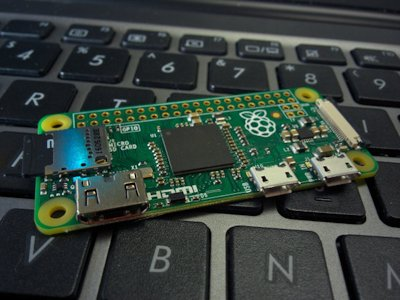

What is a Blog
Blog is short for "web log" and is a way to write about, journal, etc. on any topic. Blogs are accessible with a web browser. People sometimes blog on other sites such as blogger and facebook
Why blog
Personal blogs can be used to showcase what is going on in your life, detail your trips, show progression of a project, etc.
How are Blogs accessed
You can share your blog posts for friends or the public to see (such as a blog on a trip you took), or keep your blogs private for yourself (such as a personal journal or diary)
This blogging system (that you are currently using) runs on a web server, accessible via a browser. Changing your firewall and web server's settings can change who has access to your blogging system.
What are archives
Entries that are older than 1 year are said to be archived. They are not accessible with your regular posts anymore.. They are not accessed via Archived Posts
Access via RSS
If you are using an RSS reading application, your blog can be accessed via a link like 'http://myserver/myblog/?do=RSS'. Here is a link to your current RSS
The  icon is also a link to your blog's RSS
icon is also a link to your blog's RSS
Local Network
If you would like to share this blog interface, make sure that your web browser is accessible over networks.
Local network blog accessible via Internet
A more advanced way of setting up accessibility is to use a service like noip.com that gives you a web URL name like 'janes_computer.no-ip.com'. If you give this link to a friend or make the link publically known, people will be able to access your website and your blog interface. Note that most internet providers block homes from hosting web server on the standard port 80. You should configure your home firewall to route a port such as 8001 to your webserver's port 80. The web URL you get from noip.com will then have to have the port appended to it (e.g. http://janes_computer.no-ip.com:8001. DO NOT TRY THIS METHOD unless you know how to secure your website and firewall.
Accessing via the Tor network using .onion addressing
If you are running a Tor server, you can configure it to pass .onion web requests to your blog system's web site.
Accessing via IPFS network
If you are running IPFS, dWeb, web3, etc., you can add your RSS page. Make sure you use your peerId ID, since a file ID will be different everytime you modify a file
Running your blog on a Raspberry Pi
Raspberry Pi's are extremely small computers. Just connect one to your TV via HDMI and attach a mouse and keyboard, and you will be up and running.

Cloud Server Hosted
Another method would be to install pBlog on a webserver running on a cloud server, such as AWS, Vultr, etc.
Reddit
If the "Post to Reddit" feature is activated, a link will be visible on the side menu called "Post Current to Reddit". Clicking on this lnk will send the URL of the page you are currently viewing on your blog, to Reddit. For Reddit to accept your Blog URL, Reddit will require you to login and answer some questions pertaining to the URL you are sending Reddit. After filling out the Reddit qeustions and clicking submit, Reddit, will add your blog content to it's system.

Typically images are added via the Image Upload button
If you would like to add images manually, image URL's can be used to add images to your posts.
Put images you would like to use for blog posts in the "media" folder where the files for this blog server are located. Then reference the image like the following:
<img src="media/blogging.jpg" />
Note that images should not have spaces in their names.